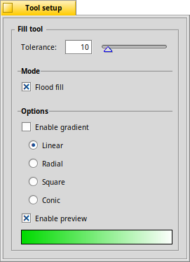

The Fill tool
|  |
The fill tool applies the foreground color to the the object you click on. only colors objects that are connected, otherwise all similar pixels on the current layer get changed. You can and drag and drop two colors to the left and right side of the gradient bar at the bottom. If you you see the gradient live as you click and move the mouse. |
Back: The Blur tool Next: The Text tool